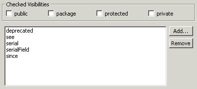

Audit - Rules - Javadoc ConventionsDescriptionThis group contains audit rules that check for both the existence and correctness of Javadoc comments within your code. |
| Rules: |
Summary
All fields should have a Javadoc comment associated with them.
Description
This audit rule checks for the existence of a Javadoc comment for each field. It can be configured to only flag fields with the specified visibilities.
Example
The following field declaration would be flagged as a violation because it does not have a Javadoc comment associated with it:
private String name;

Summary
All methods should have a Javadoc comment associated with them.
Description
This audit rule checks for the existence of a Javadoc comment for each method. In addition, it checks that each Javadoc comment includes a @param tag for each parameter (and none for non-parameters), a @return tag if the method has a return type other than void (and not if the return type is void), and a @throws tag for each explicitly declared exception (and none for exceptions that are not declared). It also checks for the use of the obsolete @exception tag.
Example
The Javadoc for the following method would be flagged three times as a violation, twice for missing @param tags and once for a missing @return tag:
/**
* Return the sum.
*/
public int sum(int x, int y)
{
...
}
Summary
Packages should have Javadoc comments in a file named "package.html".
Description
This audit rule checks all of the packages to ensure that there is a file named "package.html" that can be used by the Javadoc program to create package-level Javadoc information.
Summary
All types should have a Javadoc comment associated with them.
Description
This audit rule checks for the existence of a Javadoc comment for each type. It optionally checks for the existence of at least one @author tag and always ensures that every author tag has some text following it. It also optionally checks for the existence of at least one @version tag and always ensures that every version tag has some text following it.